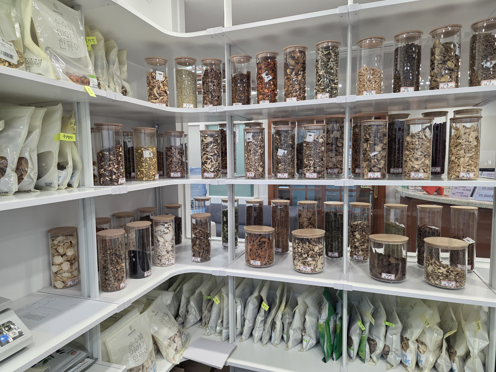
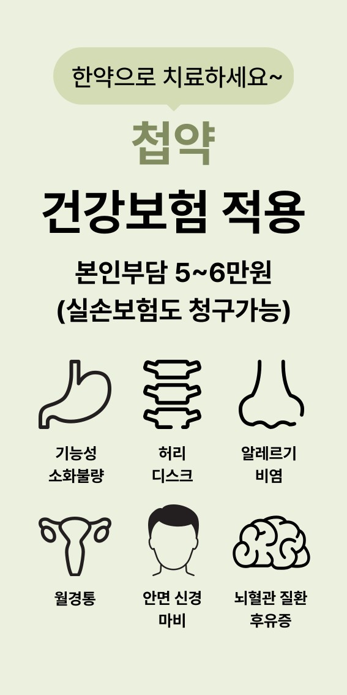
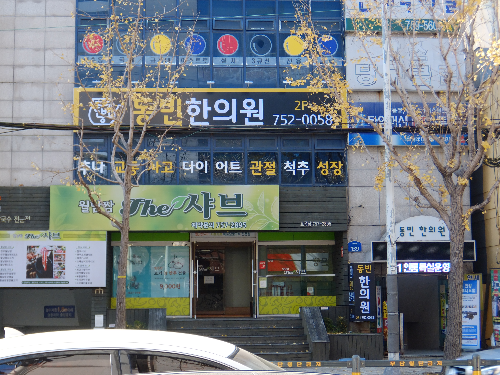
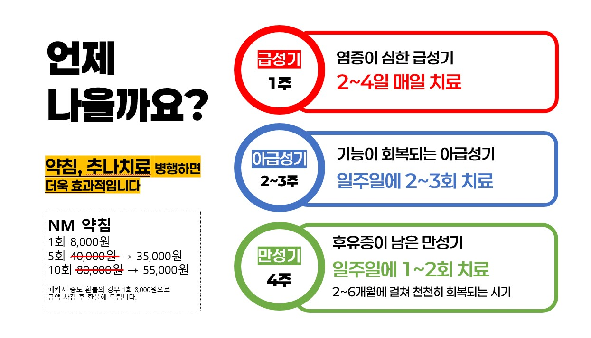

원인 중심 상담
언제부터, 어떤 동작에서 아픈지 확인해 반복되는 통증의 흐름을 파악합니다.
 051-752-0058
051-752-0058
Core Treatment
동빈한의원은 통증이 나타난 부위만 보지 않고 자세, 사용 습관, 근육 긴장, 신경 압박 가능성을 함께 살펴 치료 방향을 정합니다.
언제부터, 어떤 동작에서 아픈지 확인해 반복되는 통증의 흐름을 파악합니다.
침, 약침, 추나치료를 증상과 회복 단계에 맞춰 조합합니다.
통증 완화 이후에도 자세와 생활 습관을 함께 점검합니다.
Treatment Programs
검색하시는 핵심 증상에 맞춰 상세 안내 페이지를 구성했습니다.
Clinic Standard
동빈한의원은 몸 상태를 충분히 듣고, 필요한 치료를 이해하기 쉽게 설명합니다.

깨끗하고 안정적인 환경에서 통증 부위와 움직임을 확인합니다.

증상, 회복 속도, 생활 패턴에 따라 침, 약침, 추나치료를 조합합니다.

연산토곡 지역에서 허리, 목, 관절 통증 진료를 받으실 수 있습니다.

급성기, 아급성기, 만성기 상태에 맞춰 치료 빈도와 계획을 안내합니다.
Insurance Care
기능성 소화불량, 허리디스크, 알레르기 비염, 월경통, 안면신경마비, 뇌혈관질환 후유증 등은 상담 후 건강보험 적용 여부를 확인할 수 있습니다.
Contact
방문 전 전화 상담을 통해 진료 가능 시간을 확인해 주세요.